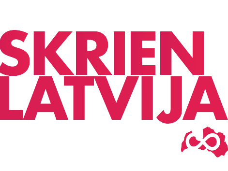

Populārākie skriešanas seriāli Latvijā:

Visi trīs skriešanas seriāli ir ļoti plaši apmeklēti.
Distances piemērotas visām vecuma grupām.
Priekš tiem kuri vairs neskrien, izveidota nūjotāju grupa ar atsevišķu ieskaiti.
Jāpiezīmē, ka cīņas tur ne mazāk spraigas.
Ņemot vērā cik skriešana kļuvusi populāra nemazums saradušies arī individuāli organizēti, populāri apmeklēti skriešanas mači.
Kā piemēram:
- Patria mud race
- Rozantāla skriešanas svētki
- Līvenhofas skrējiens
- Patriotu skrējiens
Vairāk informāciju par skriešanas sacensībām un skriešanu meklē šeit"